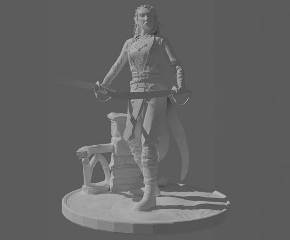

The creation of 3D printed models is also different. In contrast to gaming models, the 3D printer will print the vertices sculpted, so the printed models need to have a high-poly model, meaning a high number of polygons. The higher the number is the more detail there is, but the maximum number depends on the 3D printer. There are 2 different types of printers. Plastic and Resin. Plastic printers print just like a hot glue gun, by layers of material that will cool off with time, but it is hard to get deep detail with plastic printers. That is why for figures, they are usually printed by resin printers, that can print each layer to be as little as 0.05mm.
Typically, commercial models are made to be fan-art of video games. These models are a good way to create art that can be shared with people who are interested in the same video gaming communities. Commercial prints can also be painted in multiple techniques, like traditional paintbrushing, washes, and even airbrushing.
